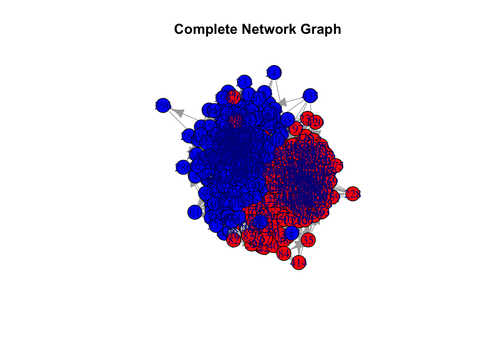
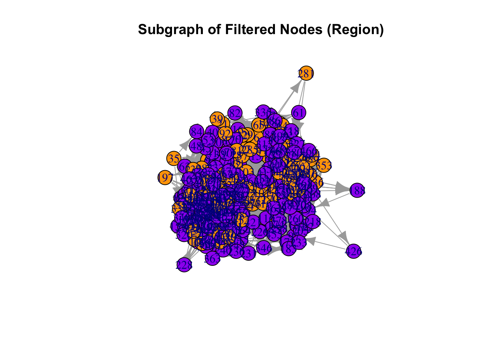
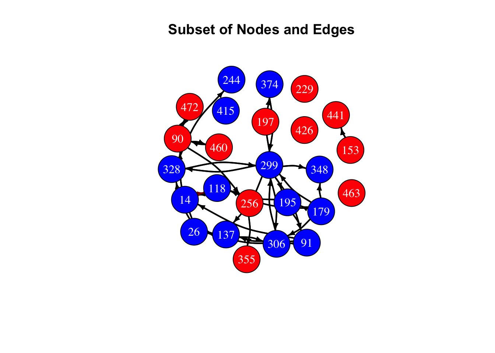
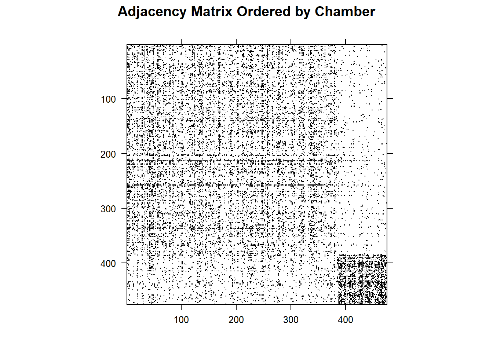
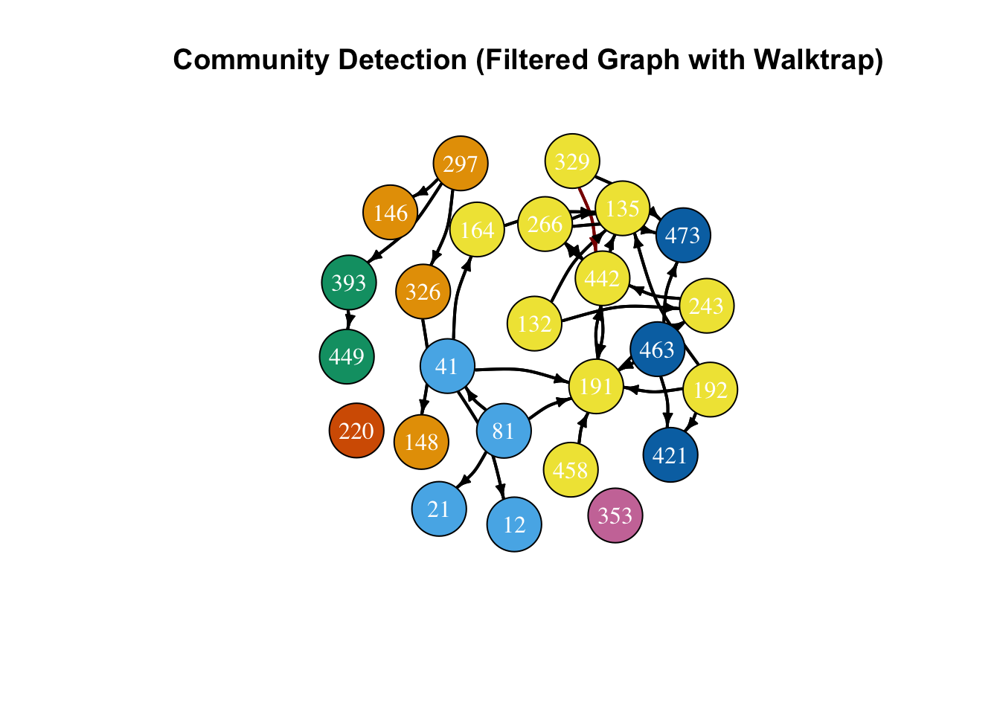
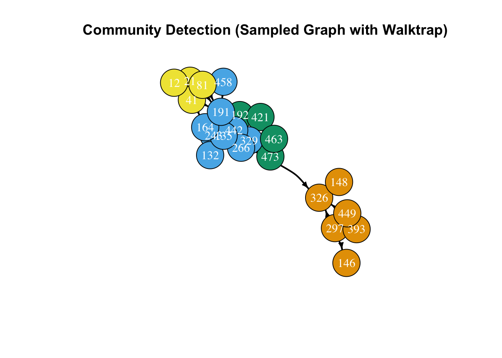
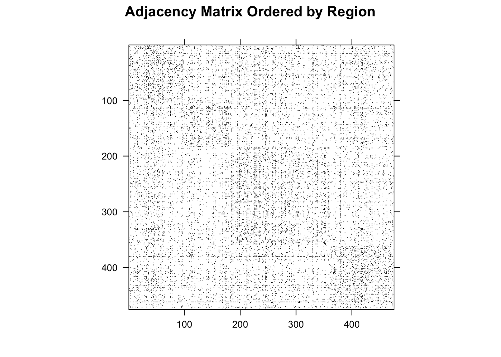
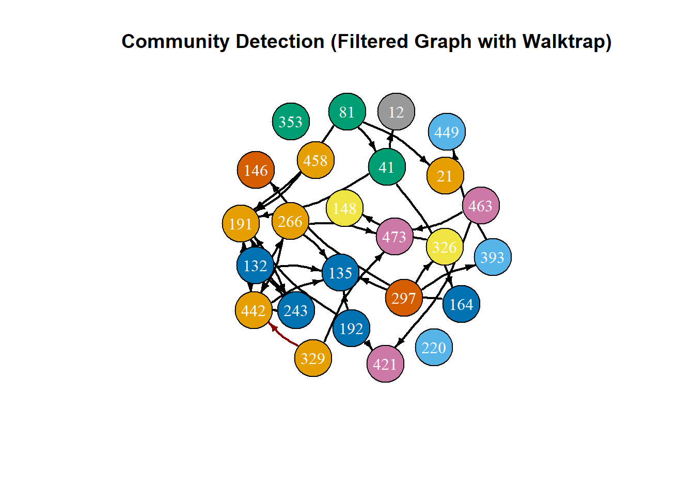
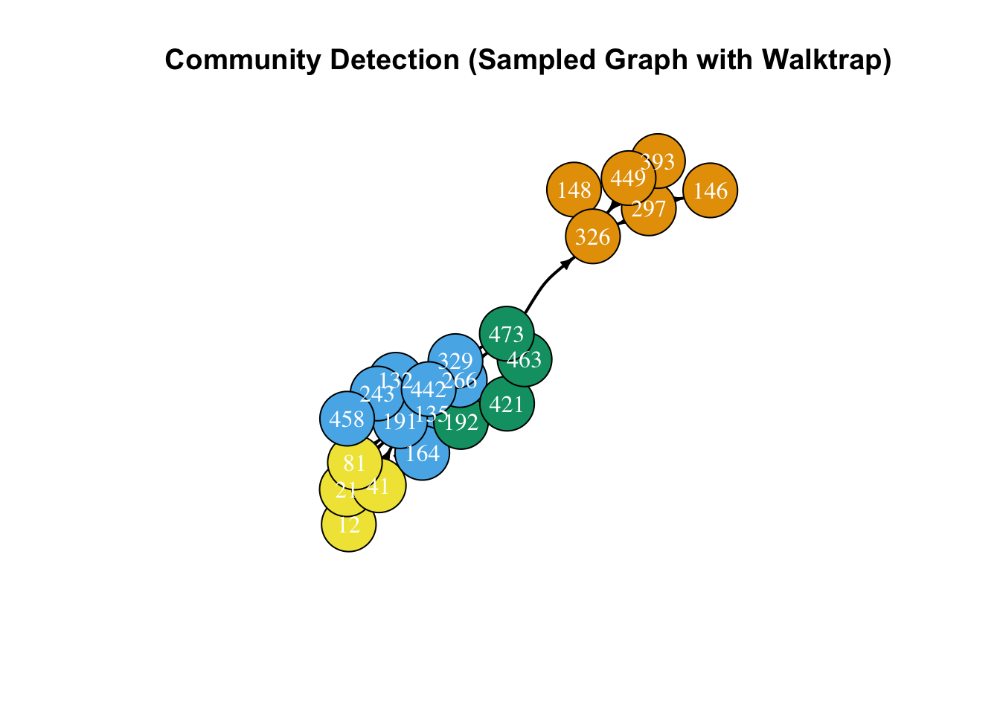
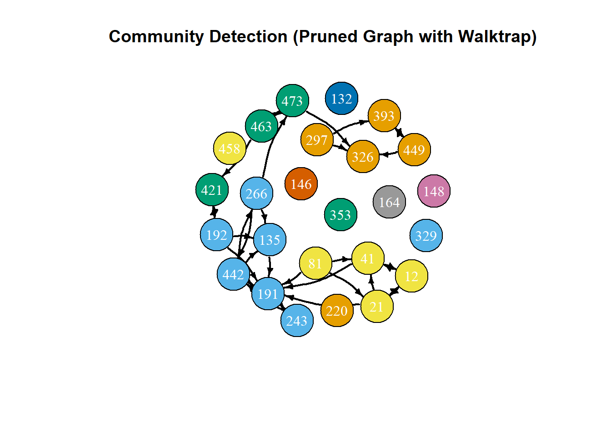

source(here::here("scripts/preprocessing.R"))
library(tidyverse)
library(rjson)
library(igraph)
library(knitr)
library(Matrix)
# Read in the JSON file
network_json <- fromJSON(file = here::here("data/congress_network/congress_network_data.json"))
# Use the preprocessing function
network_df <- cnet_json_to_df(network_json)
# Create congress twitter graph
cnet_igraph <- create_cnet_igraph(network_df)Network Analysis Vignette
Overview
In this vignette, we will explore basic network analysis using the igraph package on the congress_network dataset. Network analysis helps us explore and understand the structure of a network; in this case, the Twitter interactions of the 117th Congress. Our objective in this vignette is to give a basic overview of how to use the igraph package for data visualization, and to analyze whether particular attributes such as party affiliation, chamber, and the geographical region of a member of Congress influences who they interact with on Twitter. We will additionally cover centrality metrics, graph metrics, bootstrap hypothesis testing, and adjacency matrices.
Data
The congress_network_data.json file is a network that represents the Twitter interaction network for the 117th United States Congress, taking into account the House of Representatives as well as the Senate. The congress_node_attributes file contains vertex attributes that include the name of the congressperson, their respective chamber, party affiliation, state, and Census Bureau-designated region of the state. The congress_network_data.json files can be downloaded here from Stanford’s SNAP website. The data in the congress_node_attributes file was collected independently.
Methodology
We perform our analysis in R using the rjson and igraph packages. We read in the data from the rjson file using our preprocessing script, as shown below. To read in the data from a json file, we transformed the data into a dataframe.
Important Terms and Information
When dealing with network data observations are typically referred to as nodes or vertices, and the connections between them are called edges.
Node attributes are the properties of individual observations, like someone’s age. Whereas edge attributes are information about the relationships between nodes, such as the type of relationship or its strength.
Additionally, network data can be directed or undirected. In a directed network, edges originate from a particular node (known as the source) and terminate in another (known as the target). In contrast no such directionality exists for undirected networks. For example, if we had data on a network of people in a gift exchange, this could be represented as a directed network where edges originate from the person giving a gift and terminate at the person receiving that particular gift.
The data that we will be analyzing in this vignette is a weighted, directed network. This means that our edges have direction, and that there is a single edge attribute, known as the weight. The edge weights in this data are referred to as transmission weights and they essentially represent the probability that the source retweets, quote tweets, replies to, or mentions the target after the target tweets.
Data Visualization
The primary R package for creating network visualizations is igraph. By converting the rjson file into a dataframe and incorporating the congress_node_attributes file, we can leverage the capabilities of igraph to generate detailed network visualizations. This package enables visualization of the entire network as well as its subgroups. Node colors in the visualizations are based on party affiliation, providing clear distinctions between groups. Our objective is to enhance these visualizations through random sampling techniques. Below, we attempt to create a visualization of the complete network.
# color nodes based on party membership
V(cnet_igraph)$color <- ifelse(V(cnet_igraph)$party == "D", "blue",
ifelse(V(cnet_igraph)$party == "R", "red", "gray"))
# plot congress network
plot(cnet_igraph,
main = "Complete Network Graph")
As shown, the initial plot is cluttered and difficult to interpret due to the excessive number of nodes, and no specific attribute was assigned as vertex labels. Additionally, node colors are determined by party affiliation, highlighting group differences.
To address this, we created subgraphs by filtering the nodes based on specific attributes, such as region. In the subgraph below, we focused on the Midwest and South regions, with nodes in the Midwest colored orange and nodes in the South colored purple. This allows us to clearly distinguish between these regions while maintaining the overall structure of the network.
# filter nodes by attributes (party or region)
sub_nodes <- V(cnet_igraph)[party %in% c("D", "R") & region %in% c("Midwest", "South")]
# generate induced subgraph based on filtered nodes
sub_g <- induced_subgraph(cnet_igraph, vids = sub_nodes)
# color nodes based on region
V(sub_g)$color <- ifelse(V(sub_g)$region == "Midwest", "orange", "purple")
# plot subgraph
plot(sub_g,
main = "Subgraph of Filtered Nodes (Region)")
Similar to the first plot, this visualization also suffers from readability issues due to the dense network. To address, we will instead sample 25 nodes and obtain a subgraph containing just these nodes and the edges between them. The node colors in the plot are determined by party affiliation, enhancing the visual distinction between groups. While not depicted here, additional noise reduction can be achieved by filtering the data based on specific attributes.
# load in node attributes
cnet_node_attributes <- read_csv("data/congress_node_attributes.csv",
show_col_types = FALSE)
# sample 25 nodes
set.seed(123)
sample_nodes <- sample(length(cnet_igraph), size = 25)
# create subgraph using sampled nodes
g2 <- subgraph(cnet_igraph, sample_nodes)
# colors based on party
V(g2)$color <- ifelse(V(g2)$party == "D", "blue",
ifelse(V(g2)$party == "R", "red", "gray"))
# color based on weight
E(g2)$color <- ifelse(E(g2)$weight > .025, "darkred", "black")
# plot subgraph
plot(g2,
edge.width = 2,
edge.color = E(g2)$color,
edge.curved = 0.2,
edge.arrow.size = 0.5,
edge.color = "black",
vertex.color = V(g2)$color,
vertex.size = 30,
vertex.frame.color = "black",
vertex.label.color = "white",
layout = layout_with_fr,
main = "Subset of Nodes and Edges")
To explore a subset of the network, we first filtered the nodes based on their region (Midwest and South). After narrowing down the nodes to these two regions, we randomly selected \(n=25\) nodes to analyze further. This sampling ensures that we focus on a manageable portion of the network while retaining the regional diversity we are interested in. We then extracted the corresponding edges that connect these sampled nodes and created a subgraph for visualization. In this plot, nodes are colored according to their region: Midwest nodes are colored orange and South nodes are colored purple. The edges are colored based on their weight, with higher-weighted connections shown in dark red. This approach allows us to examine the structure of a smaller, region-specific portion of the network.
# sample from node attributes, then match to corresponding connections in the network
set.seed(123)
# filter the nodes by region (Midwest and South)
filtered_nodes <- V(cnet_igraph)[V(cnet_igraph)$region %in% c("Midwest", "South")] %>% as.vector()
# random sample from the filtered nodes
sample_nodes <- filtered_nodes[sample(length(filtered_nodes), size = 25)]
# create subgraph using sampled nodes
g2 <- subgraph(cnet_igraph, sample_nodes)
# colors based on region
V(g2)$color <- ifelse(V(g2)$region == "Midwest", "orange",
ifelse(V(g2)$region == "South", "purple", "gray"))
# colors based on weight
E(g2)$color <- ifelse(E(g2)$weight > 0.025, "darkred", "black")
# plot subgraph
plot(g2,
edge.width = 2,
edge.color = E(g2)$color,
edge.curved = 0.2,
edge.arrow.size = 0.5,
vertex.color = V(g2)$color,
vertex.size = 30,
vertex.frame.color = "black",
vertex.label.color = "white",
layout = layout_with_fr,
main = "Random Sample of 25 Nodes (Filtered by Midwest and South Regions)")
Centrality Metrics
Centrality metrics are node specific measures that aim to quantify the importance of a node in a network. While there there are many different centrality metrics, we will focus on the following:
- Degree: The number of edges that a particular node has
- Betweenness: How frequently a particular node lies along the shortest path between any two other nodes
- Closeness: Inverse of the sum of the shortest path length between that node and every other node in the network
The below code chunk shows how we can calculate these centrality metrics for our network data.
# calculate degrees for each node
degree_metric <- tibble(degree = degree(cnet_igraph, mode = "all"), node = 1:length(degree(cnet_igraph, mode = "all")))
# calculate the closeness for each node
closeness_metric <- tibble(closeness = closeness(cnet_igraph, mode = "all"), node = 1:length(closeness(cnet_igraph, mode = "all")))
# calculate the betweenness for each node
betweenness_metric <- tibble(betweenness = betweenness(cnet_igraph), node = 1:length(betweenness(cnet_igraph)))
# show the degree for the first several nodes
degree_metric %>%
head()# A tibble: 6 × 2
degree node
<dbl> <int>
1 46 1
2 41 2
3 55 3
4 56 4
5 65 5
6 23 6# show the closeness for the first several nodes
closeness_metric %>%
head()# A tibble: 6 × 2
closeness node
<dbl> <int>
1 0.558 1
2 0.779 2
3 0.613 3
4 0.786 4
5 0.687 5
6 0.555 6# show the betweenness for the first several nodes
betweenness_metric %>%
head()# A tibble: 6 × 2
betweenness node
<dbl> <int>
1 82 1
2 161 2
3 247 3
4 3768 4
5 1094. 5
6 2 6Next we want to find what nodes in our network are the most central based off of these metrics. The code below creates tables with the top five nodes based off of each metric.
# get the nodes with the highest degree
highest_5_degree <- tibble(degree = degree(cnet_igraph, mode = "all"), node = 1:length(degree(cnet_igraph))) |>
arrange(-degree) |>
slice(1:5)
# identify the congresspeople with the highest degree and show results
cnet_node_attributes |>
filter(cnet_node_attributes$node %in% highest_5_degree$node) |>
select(node, congressperson) |>
inner_join(highest_5_degree) |>
select(-node) |>
arrange(-degree) |>
kableExtra::kable() |>
kableExtra::kable_styling(bootstrap_options = "striped", full_width = F)| congressperson | degree |
|---|---|
| Kevin McCarthy | 284 |
| Nancy Pelosi | 261 |
| Bobby Rush | 190 |
| Steny Hoyer | 187 |
| Scott Franklin | 182 |
# get the nodes with the highest closeness
highest_5_closeness <- tibble(closeness = closeness(cnet_igraph, mode = "all"), node = 1:length(closeness(cnet_igraph, mode = "all"))) |>
arrange(-closeness) |>
slice(1:5)
# identify the congresspeople with the highest closeness and show results
cnet_node_attributes |>
filter(cnet_node_attributes$node %in% highest_5_closeness$node) |>
select(node, congressperson) |>
inner_join(highest_5_closeness) |>
select(-node) |>
arrange(-closeness) |>
kableExtra::kable() |>
kableExtra::kable_styling(bootstrap_options = "striped", full_width = F)| congressperson | closeness |
|---|---|
| John Cornyn | 0.9558465 |
| Don Beyer | 0.9070674 |
| Sean Casten | 0.8892880 |
| Anthony Brown | 0.8591653 |
| Kevin McCarthy | 0.8551735 |
# get the nodes with the highest betweennes
highest_5_betweenness <- tibble(betweenness = betweenness(cnet_igraph), node = 1:length(betweenness(cnet_igraph))) |>
arrange(-betweenness) |>
slice(1:5)
# identify the congresspeople with the highest betweenness and show results
cnet_node_attributes |>
filter(cnet_node_attributes$node %in% highest_5_betweenness$node) |>
select(node, congressperson) |>
inner_join(highest_5_betweenness) |>
select(-node) |>
arrange(-betweenness) |>
kableExtra::kable() |>
kableExtra::kable_styling(bootstrap_options = "striped", full_width = F)| congressperson | betweenness |
|---|---|
| Don Beyer | 18946 |
| Kevin McCarthy | 15846 |
| John Cornyn | 15169 |
| Elise Stefanik | 13872 |
| Sean Casten | 11201 |
As we can see from the above tables, Kevin McCarthy is present in all five of the tables, which implies that he is highly central to the network.
Graph/Subgraph Metrics
Graph and subgraphs metrics are used to measure qualities of the network as a whole rather than looking at each individual node as we did with centrality networks. The metrics we will be looking at are:
- Transitivity: The probability that if some node A – node B, and node B – node C, then node A – node C
- Edge Density: Ratio of actual number of edges to total possible edges
- Mean Distance: Mean of the smallest distance between two nodes
- Reciprocity: In a directed network, the probability that if node A – node B, then node B – node A
First we are going to create a few important subgraphs including the Democratic and Republican subgraphs, the House and Senate subgraphs, and the subgraphs for each region.
# create subgraph of democrats
cnet_subgraph_dem <- cnet_igraph %>%
subgraph(
cnet_igraph %>%
vertex_attr(
"party"
) %>%
`==`("D")
)
# create subgraph of republicans
cnet_subgraph_rep <- cnet_igraph %>%
subgraph(
cnet_igraph %>%
vertex_attr(
"party"
) %>%
`==`("R")
)
# create subgraph of senators
cnet_subgraph_senate <- cnet_igraph %>%
subgraph(
cnet_igraph %>%
vertex_attr(
"chamber"
) %>%
`==`("Senate")
)
# create subgraph of representatives
cnet_subgraph_house <- cnet_igraph %>%
subgraph(
cnet_igraph %>%
vertex_attr(
"chamber"
) %>%
`==`("House")
)
# create subgraph of congresspeople from the midwest
cnet_subgraph_midwest <- cnet_igraph %>%
subgraph(
cnet_igraph %>%
vertex_attr(
"region"
) %>%
`==`("Midwest") %>%
replace_na(FALSE)
)
# create subgraph of congresspeople from the west
cnet_subgraph_west <- cnet_igraph %>%
subgraph(
cnet_igraph %>%
vertex_attr(
"region"
) %>%
`==`("West") %>%
replace_na(FALSE)
)
# create subgraph of congresspeople from the south
cnet_subgraph_south <- cnet_igraph %>%
subgraph(
cnet_igraph %>%
vertex_attr(
"region"
) %>%
`==`("South") %>%
replace_na(FALSE)
)
# create subgraph of congresspeople from the northeast
cnet_subgraph_northeast <- cnet_igraph %>%
subgraph(
cnet_igraph %>%
vertex_attr(
"region"
) %>%
`==`("Northeast") %>%
replace_na(FALSE)
)Next we will calculate the metrics for each of the subgraphs and the overall graph and use the kable package to display the results.
# create vector containing the names of all 8 subgraphs
graphs <- paste(rep("cnet_subgraph", 8),
c("dem", "rep", "house", "senate", "midwest", "west", "south", "northeast"),
sep = "_")
# create vector containing the names of the metrics we wish to calculate
metrics <- c("reciprocity", "transitivity", "edge_density", "mean_distance")
# compute the metrics for each subgraph
graph_metrics <- lapply(c("cnet_igraph", graphs),
function(graph) {
lapply(metrics,
function(metric) {
get(metric, mode = "function")(get(graph))
})
})
# show metrics for each subgraph and the overall network
graph_metrics %>%
unlist() %>%
matrix(
ncol = length(metrics),
byrow = TRUE
) %>%
`colnames<-`(metrics) %>%
`rownames<-`(c("overall", c("dem", "rep", "house", "senate", "midwest", "west", "south", "northeast"))) %>%
kable()| reciprocity | transitivity | edge_density | mean_distance | |
|---|---|---|---|---|
| overall | 0.4615848 | 0.2695350 | 0.0590229 | 0.0064072 |
| dem | 0.4734122 | 0.3058064 | 0.0948429 | 0.0058064 |
| rep | 0.4895397 | 0.3418851 | 0.1091324 | 0.0068498 |
| house | 0.4628769 | 0.2975693 | 0.0691359 | 0.0066809 |
| senate | 0.5284709 | 0.3995948 | 0.1866937 | 0.0049157 |
| midwest | 0.5280172 | 0.3281250 | 0.0956504 | 0.0088555 |
| west | 0.5297203 | 0.2979418 | 0.0903919 | 0.0083852 |
| south | 0.4870759 | 0.3215361 | 0.0803896 | 0.0078700 |
| northeast | 0.5070423 | 0.3040119 | 0.0916523 | 0.0095657 |
In the table above, we can see that all of the subgraphs have a much higher edge density than the overall graph. This makes sense as the sugraphs only contain observations that share a certain attribute in common, and we would generally expect that people on twitter interact more often with people they are similar with. However, this does bring up the question: How can we tell if these differences are statistically significant?
Hypothesis Testing
In order to formally test whether these differences are statistically significant, we will need to find a distribution that our test statistics (i.e., our subgraph metrics) can be compared to in order to obtain a \(p\)-value. One way to do this is to repeatedly randomly sample subgraphs of the same size from the overall graph and calculate the metric of interest on the randomly sampled subgraphs. We then can use these metrics as a null distribution of the metric of interest. To help us perform this procedure, we will define a function called resample.t.test() which will follow these steps to calculate a \(p\)-value given a specific graph, subgraph, statistic, and \(n\), the number of random samples to perform. We then apply this function to the subgraphs and metrics that we looked at in the previous section.
set.seed(12132024)
# resampling t-test to compare statistic of a subgraph to the overall graph
resample.t.test <- function(graph, subgraph, statistic, n, type = c("upper", "lower", "two-tailed")) {
# get number of nodes in graph and subgraph
n.graph <- graph %>% length()
n.subgraph <- subgraph %>% length()
# extract function to get statistic
statistic <- get(statistic, mode = "function")
# calculate distribution of the statistic of interest through random sampling
stat.dist <- lapply(
1:n,
function(i) {
graph %>%
subgraph(
sample(n.graph, n.subgraph)
) %>%
statistic()
}
) %>% unlist()
# calculate mean of the distribution
dist.mean <- mean(stat.dist)
# calculate test statistic
test.stat <- subgraph %>% statistic()
# calculate p-value
if (type == "upper") {
pval <- sum(stat.dist >= test.stat)/n
}
else if (type == "lower") {
pval <- sum(stat.dist <= test.stat)/n
}
else if (type == "two-tailed") {
pval <- sum(stat.dist >= dist.mean + abs(test.stat - dist.mean))/n +
sum(abs(stat.dist <= dist.mean - abs(test.stat - dist.mean)))/n
}
# prepare list for output
out <- list(
dist = stat.dist,
stat = test.stat,
pval = pval
)
# return output
return(out)
}
# prepare matrix to store t-test results
t.test.results <- matrix(
data = rep(rep(0, length(groups)), length(metrics)),
nrow = length(graphs),
ncol = length(metrics),
dimnames = (list(c("dem", "rep", "house", "senate", "midwest", "west", "south", "northeast"), metrics))
)
# perform t-tests on subgraph metrics
for (i in 1:length(graphs)) {
for (j in 1:length(metrics)) {
t.test.results[i,j] <- resample.t.test(cnet_igraph, get(graphs[i]), metrics[j], 10000, "two-tailed")$pval
}
}The results of our hypothesis test are shown in the following table.
# print results
t.test.results %>%
kable(
caption = "Subgraph Metric p-values"
)| reciprocity | transitivity | edge_density | mean_distance | |
|---|---|---|---|---|
| dem | 0.4181 | 0.0067 | 0 | 0.0000 |
| rep | 0.1035 | 0.0000 | 0 | 0.0239 |
| house | 0.8598 | 0.0000 | 0 | 0.9977 |
| senate | 0.0700 | 0.0002 | 0 | 0.0016 |
| midwest | 0.0486 | 0.0440 | 0 | 0.1634 |
| west | 0.0298 | 0.2463 | 0 | 0.1259 |
| south | 0.2327 | 0.0049 | 0 | 0.4218 |
| northeast | 0.2396 | 0.2576 | 0 | 0.2262 |
However, since we performed multiple hypothesis tests, we will need to correct our \(p\)-values to account for the fact that the individual Type I Error rates compound over multiple test. Here, we will use the Benjamini-Yekuteili correction.
# apply benjamini-yekuteili correction and print results
t.test.results %>%
# convert to dataframe for easier manipulatioin
as.data.frame() %>%
# add subgraph column
mutate(
subgraph = row.names(.),
.before = "reciprocity"
) %>%
# reset rownames
`row.names<-`(NULL) %>%
# pivot to long format
pivot_longer(
-subgraph,
names_to = "metric",
values_to = "p.value"
) %>%
# sort by increasing p-value
arrange(
p.value
) %>%
mutate(
i = row_number()
) %>%
group_by(i) %>%
# apply benjamini-yekuteili correction
mutate(
p.by = nrow(.)*sum(1/1:i)*p.value/i
) %>%
ungroup() %>%
# remove columns that are no longer needed
select(
-i,-p.value
) %>%
# pivot back to wide format for legibility
pivot_wider(
names_from = metric,
values_from = p.by
) %>%
relocate(
reciprocity,
transitivity,
.before = "edge_density"
) %>%
# show results
kable(
caption = "Benjamini-Yekuteili Corrected Subgraph Metric p-values"
)| subgraph | reciprocity | transitivity | edge_density | mean_distance |
|---|---|---|---|---|
| dem | 1.8277158 | 0.0474286 | 0 | 0.0000000 |
| rep | 0.5749251 | 0.0000000 | 0 | 0.1615988 |
| house | 3.5743230 | 0.0000000 | 0 | 4.0491607 |
| senate | 0.4029468 | 0.0016550 | 0 | 0.0125248 |
| midwest | 0.2903918 | 0.2733951 | 0 | 0.8489506 |
| west | 0.1929387 | 1.1359595 | 0 | 0.6758886 |
| south | 1.1366060 | 0.0364175 | 0 | 1.7974246 |
| northeast | 1.1366387 | 1.1561592 | 0 | 1.1388290 |
We can now draw conclusions for our hypothesis tests with these corrected \(p\)-values. At the \(\alpha=0.05\) significance level, we can conclude that the edge density of all subgraphs is different from the overall graph. Additionally, the transitivity of the Democratic, Republican, House, and Senate subgraphs are all different from the overall graph, and the mean distance of the Democratic and the Senate subgraphs are also different from the overall graph. The results for the edge density in particular indicate that these node attributes do play a significant factor in how members of Congress interact on Twitter: members have a greater tendency to interact with other members of the same party, chamber, state, and region.
Adjacency Matrices
Another way we can encode the information in a network is in a matrix. For a given graph with \(N\) nodes, the adjacency matrix of the graph is a \(N\times N\) matrix with entries \(A_{ij}\in\{0,1\}\) where \(A_{ij}=1\) if there is an edge going from node \(i\) to node \(j\). Visualizing these matrices can give greater insight into the structure of a network, especially when the nodes are ordered based on particular attributes. In the following section, we will convert the cnet_igraph into an adjacency matrix and reorder it based on particular node attributes.
# convert igraph object into an adjacency matrix
cnet_adj <- as_adjacency_matrix(cnet_igraph)
# define helper function to reorder adjacency matrix based on particular node attributes
reorder_cnet_adj <- function(adj_mat, attribute) {
# load in node attributes
node_attributes <- read_csv("data/congress_node_attributes.csv",
show_col_types = FALSE)
# obtain new order by arranging based on attribute
new_order <- node_attributes %>%
mutate(
rand_order = sample(node)
) %>%
arrange(
get(attribute), rand_order
) %>%
mutate(
new_order = row_number()
) %>%
arrange(
node
) %>%
pull(
new_order
)
# reorder adjancency matrix based on the new order
new_adj_mat <- adj_mat
for (i in 1:475) {
for (j in 1:475) {
new_adj_mat[new_order[i], new_order[j]] <- adj_mat[i,j]
}
}
return(new_adj_mat)
}
# generate adjacency matrices ordered by each set of node attributes
cnet_adj_chamber <- reorder_cnet_adj(cnet_adj, "chamber")
cnet_adj_party <- reorder_cnet_adj(cnet_adj, "party")
cnet_adj_state <- reorder_cnet_adj(cnet_adj, "state")
cnet_adj_region <- reorder_cnet_adj(cnet_adj, "region")Now, we can visualize our reordered adjacency matrices using the image() function.
# visualize adjacency matrix ordered by chamber
cnet_adj_chamber %>%
Matrix() %>%
image(
col.regions = c("black"),
sub = NULL,
xlab = NULL,
ylab = NULL,
main = "Adjacency Matrix Ordered by Chamber"
)
When the adjacency matrix of the Congress Twitter network is organized by the chamber attribute, we see two distinct regions of higher edge densities. These correspond to the House of Representatives (the larger square) and the Senate (the smaller square). The adjacency matrix ordered by chamber shows that members tend to interact more with other members in the same chamber, which agrees with our findings from the subgraph metrics and hypothesis testing.
# visualize adjacency matrix ordered by party
cnet_adj_party %>%
Matrix() %>%
image(
col.regions = c("black"),
sub = NULL,
xlab = NULL,
ylab = NULL,
main = "Adjacency Matrix Ordered by Party"
)
When the adjacency matrix of the Congress Twitter network is organized by the party attribute, we again can see two distinct regions of higher edge densities. This time, these correspond to the Democratic and Republican parties, and again demonstrate that members tend to interact with other members from the same party, as opposed to those across the aisle.
# visualize adjacency matrix ordered by state
cnet_adj_state %>%
Matrix() %>%
image(
col.regions = c("black"),
sub = NULL,
xlab = NULL,
ylab = NULL,
main = "Adjacency Matrix Ordered by State"
)
When we organize the adjacency matrix by the state attribute, we see a dark diagonal feature stretching across our adjacency matrix. This feature represents the interactions between congresspeople from the same state, and the higher edge density indicates that members of Congress also tend to interact with members from the same state than they do with members from other states.
# visualize adjacency matrix ordered by region
cnet_adj_region %>%
Matrix() %>%
image(
col.regions = c("black"),
sub = NULL,
xlab = NULL,
ylab = NULL,
main = "Adjacency Matrix Ordered by Region"
)
Finally, when we organize the adjacency matrix based on the region a member is from, we can make out four faint square-shaped regions of higher edge density. These squares represent interactions between members of the same regions, and just as with the other node attributes, we see that members tend to interact with those from the same region.
Community Detection
Community detection involves identifying groups of vertices within a graph that are more densely connected to each other than to the rest of the network. Since our data represents a weighted, directed network, we will use the Walktrap algorithm, which is better suited for such networks compared to the Louvain method, which requires an undirected graph. This simulates random walks on the graph to detect communities.
Below, we will explore four methods for reducing the complexity of our community detection graphs: filtering edges by weight, applying random sampling to the edges, sampling a subset of nodes, and pruning edges based on node degree.
To avoid creating an overly dense graph, we will reduce its complexity by using a random sample from the data visualization portion. Additionally, we have filtered the edges based on their weights, removing connections that are less significant. Specifically, we excluded edges with weights below 0.003, as the median weight across all edges is 0.0025, which helps focus on the most meaningful connections in the network.
# remove edges with weight below 0.003
g2_filtered <- delete_edges(g2, E(g2)[weight < 0.003])
# perform Walktrap community detection on the filtered graph
community_walktrap <- cluster_walktrap(g2_filtered)
# assign colors to the communities
V(g2_filtered)$color <- factor(community_walktrap$membership)
# plot results
plot(g2_filtered,
edge.width = 2,
edge.color = E(g2_filtered)$color,
edge.curved = 0.2,
edge.arrow.size = 0.5,
vertex.color = V(g2_filtered)$color,
vertex.size = 30,
vertex.frame.color = "black",
vertex.label.color = "white",
layout = layout_with_fr,
main = "Community Detection (Filtered Graph with Walktrap)")
We can also apply random sampling to reduce the size and density of the graph, while preserving its underlying structure.
# total number of edges
total_edges <- ecount(g2)
# sample from edges, ensuring the sample size doesn't exceed the number of edges
set.seed(123)
sample_size <- min(100, total_edges)
# sample edges
sampled_edges <- sample(E(g2), size = sample_size)
# new graph with the sampled edges
g2_sampled <- subgraph.edges(g2, sampled_edges)Warning: `subgraph.edges()` was deprecated in igraph 2.1.0.
ℹ Please use `subgraph_from_edges()` instead.# walktrap community detection on the sampled graph
community_walktrap <- cluster_walktrap(g2_sampled)
# color based on community membership
V(g2_sampled)$color <- factor(community_walktrap$membership)
# plot results
plot(g2_sampled,
edge.width = 2,
edge.color = E(g2_sampled)$color,
edge.curved = 0.2,
edge.arrow.size = 0.5,
vertex.color = V(g2_sampled)$color,
vertex.size = 30,
vertex.frame.color = "black",
vertex.label.color = "white",
layout = layout_with_fr,
main = "Community Detection (Sampled Graph with Walktrap)")
We can also sample a subset of nodes, which simplifies the analysis by focusing on specific nodes.
# sample 25 nodes from the graph
set.seed(123)
sampled_nodes <- sample(V(g2), size = 25)
# subgraph containing only the sampled nodes
g2_sampled_nodes <- induced_subgraph(g2, vids = sampled_nodes)
# perform walktrap community detection on the sampled graph
community_walktrap <- cluster_walktrap(g2_sampled_nodes)
# color based on community membership
V(g2_sampled_nodes)$color <- factor(community_walktrap$membership)
# plot results
plot(g2_sampled_nodes,
edge.width = 2,
edge.color = E(g2_sampled_nodes)$color,
edge.curved = 0.2,
edge.arrow.size = 0.5,
vertex.color = V(g2_sampled_nodes)$color,
vertex.size = 30,
vertex.frame.color = "black",
vertex.label.color = "white",
layout = layout_with_fr,
main = "Community Detection (Sampled Nodes with Walktrap)")
We can also remove edges between nodes with low degrees, under the assumption that highly connected nodes play a more significant role in community detection.
# remove edges between nodes with low degrees
low_degree_nodes <- V(g2)[degree(g2) < 3]
g2_pruned <- delete_edges(g2, E(g2)[.from(low_degree_nodes) | .to(low_degree_nodes)])
# walktrap community detection on the pruned graph
community_walktrap <- cluster_walktrap(g2_pruned)
# color based on community membership
V(g2_pruned)$color <- factor(community_walktrap$membership)
# plot results
plot(g2_pruned,
edge.width = 2,
edge.color = E(g2_pruned)$color,
edge.curved = 0.2,
edge.arrow.size = 0.5,
vertex.color = V(g2_pruned)$color,
vertex.size = 30,
vertex.frame.color = "black",
vertex.label.color = "white",
layout = layout_with_fr,
main = "Community Detection (Pruned Graph with Walktrap)")